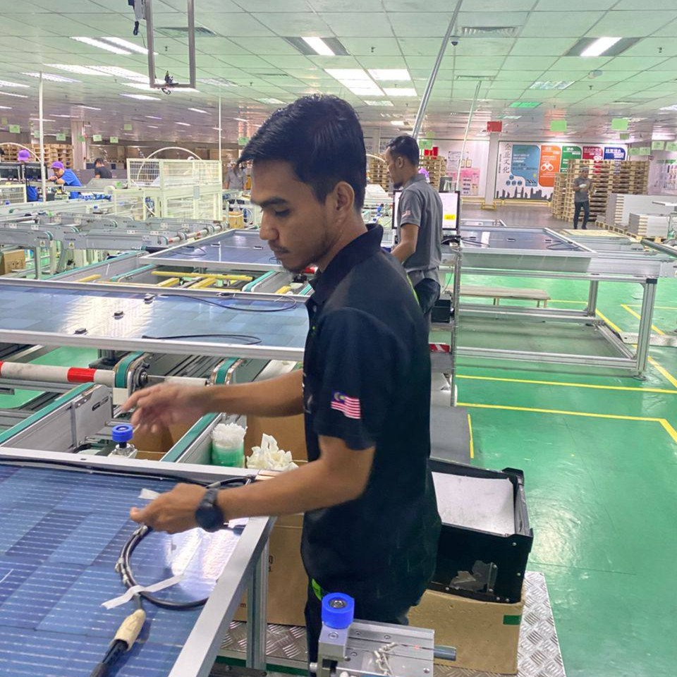
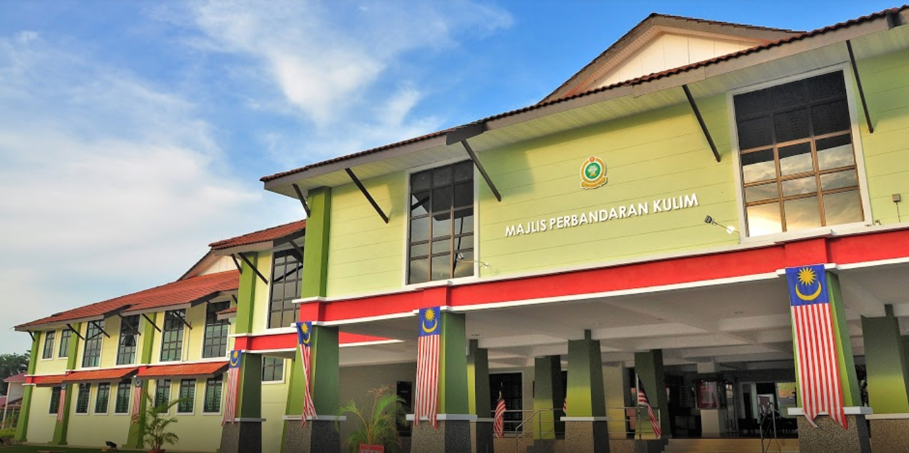

Kerja di Jinko Solar menggabungkan ketelitian, kebersihan dan standard tinggi -Inilah dunia Reword & 5S di Jinko Solar-
Lebih LagiAIZAT_IZANUDDIN
I'm
OBJEKTIF KERJAYA
Mencari peluang dalam organisasi yang membolehkan saya mengembangkan kemahiran, menimba pengalaman baharu, serta menyumbang secara efektif kepada pencapaian matlamat syarikat.

Kejuruteraan Mekanikal (Automotif)
Infomasi tentang diri saya.
- Tarikh lahir: 04 MAC 2003
- Website: None
- No.Telefon: 013-977 1862
- Bandar: Permatang Pauh, Pulau Pinang
- Umur: 30
- Pelajaran: Diploma Kejururteraan Mekanika (Automotif)
- Email: aizat.izanudin@gmail.com
KEMAHIRAN
Kemahiran yang saya miliki merangkumi pelbagai bidang yang dapat menyokong pencapaian matlamat organisasi serta memajukan diri saya secara profesional.
Sistem Microsoft Office 75%
Adobe & AutoCAD 70%
Komunikasi 80%
Multi-tasking 80%
Kerja Berkumpulan 90%
Khidmat Pelanggan 90%
BAHASA
Mahir berkomunikasi dalam Bahasa Melayu dan Bahasa Inggeris.
Bahasa Melayu 100%
Bahasa English 70%
RESUME
Ringkasan
AHMAD FAKHRUL AIZAT NOR IZANUDDIN
Saya ingin menjadi sebahagian daripada syarikat di mana saya boleh menggunakan dan meningkatkan kemahiran saya serta menimba pengalaman untuk pembangunan diri pada masa hadapan. Mengaplikasikan pengetahuan dan kemahiran yang diperoleh semasa pengajian dan pengalaman kerja lepas.
- Alamat: Permatang Pauh, Pulau Pinang
- No Telefon: 013-977 1862
- Email: aizat.izanudin@gmail.com
Pendidikan
Diploma Kejururteraan Mekanikal (Automotif)
2013 - 2017
Polisas, Kuantan Pahang
CGPA: 3.03
Sekolah Menengah-Sijil Pelaajran Malaysia
2011 - 2012
Sekolah Menengah Kebangsaan Jubli Perak, Sultan Haji Ahmad Shah
SPM: 5A,2B,2C
Sekolah Menengah-Penilaian Menengah Rendah
2008 - 2010
Sekolah Menengah Kebangsaan Jubli Perak, Sultan Haji Ahmad Shah
SPM: 2A,5B,1C
Pengalaman
MAJLIS PERBANDARAN KULIM,KEDAH
Februari 2025 - Sekarang
Pembantu Penilaian Gred W1
- Membantu dalam proses penilaian harta dan cukai taksiran.
- Menyediakan laporan penilaian dan analisis data.
- Menghantar notis berkenaan penilaian harta semasa lawatan tapak dan berurusan dengan pemilik.
- Menjalankan penyelidikan,pengiraan cukai dan memasukkan data dalam sistem jabatan.
JABATAN PERANGKAAN MALAYSIA, PULAU PINANG
Oktober 2024 - Febuari 2025
Personel MYSTEP, Ict use and access by individuals and households survey report (icths)
- Melaksanakan tugasan statistik, pungutan data dilapangan (ICTHS) bagi penggunaan dan capaian (ICT) melalui survei/Banci.
- Memproses tangkapan data dan melaksanakan tugasan yang diarahkan dari semasa ke semasa.
- Memproses dan merekod data dalam sistem MyAgricensus dengan tepat untuk memastikan tahap ketepatan dan konsistensi yang tinggi bagi Banci Pertanian 2024.
- Mengekalkan intergriti dan kualiti data, membolehkan jabatan mencapai matlamat untuk laporan banci pertanian yang tepat dan komprehensif.
JINKO SOLAR TECH SDN BHD, PENANG
Mac 2022 - Julai 2024
OPERATOR PROSES
- Melakukan pembersihan panel solar secara berkala untuk membuang kotoran, habuk, serpihan dan bahan lain yang boleh mengurangkan kecekapan pane
- Pantau keadaan cuaca, dan pastikan operasi pembersihan dilakukan dalam keadaan selamat.
- Memastikan module mengikut piawaian label mpp kuasa (460W-470W).
Pencapaian
- Memenangi Pingat Perak dalam Pertandingan Projek Akhir DME Carnival 2016.
- Menjadi Ketua pasukan Pick MyVACC di Pusat Pemberian Vaksin Taman Negara, Kuala Tahan, Jerantut.
Portfolio
Portfolio ini memaparkan aktiviti yang saya lakukan dari hasil kerja saya dalam bidang dan luar dan luar bidang.

Jinko Solar.

Jabatan Perangkaan Malaysia, Pulau Pinang.
Peranan saya sebagai MySTEP di Jabatan Perangkaan Malaysia, Pulau Pinang.
Lebih Lagi

Majlis Perbandaran Kulim.
Peranan dan Tanggungjawab Pembantu Penilaian Harta dalam Menyokong Kelancaran Proses Penilaian serta Pengurusan Data Harta di Pihak Berkuasa Tempatan.
Lebih Lagi
Rujukan
Saya menyediakan butiran rujukan daripada pihak yang mengenali prestasi saya.

Penolong Pengarah E9 Jabatan Perangkaan Malaysia Pulau Pinang
Puan Asma Amanina Bt Aziz
Phone: 014-824 0914.
Email: asma.amanina@dosm.gov.my

Pen.Pengarah Bahagian Governan & Kecemerlangan Jabatan Pendidikan Politeknik
Ts.Mohd Asnawi Bin Abd Wahab
Phone: 019-7280 064.
Email: asnawi@moe.gov.my
Hubungi Saya
Untuk maklumat lanjut atau sebarang pertanyaan, jangan ragu untuk menghubungi saya melalui cara-cara berikut:
Alamat
Permatang Pauh, Pulau Pinang
Hubungi Saya
013-977 1862
Email Saya
aizat.izanudin@gmail.com